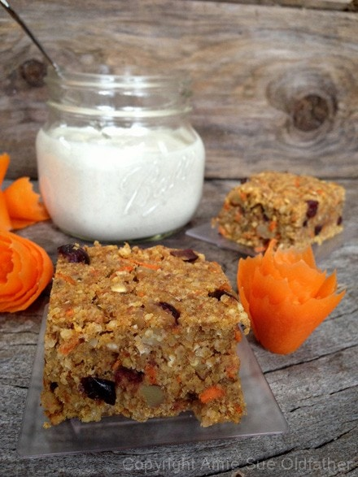
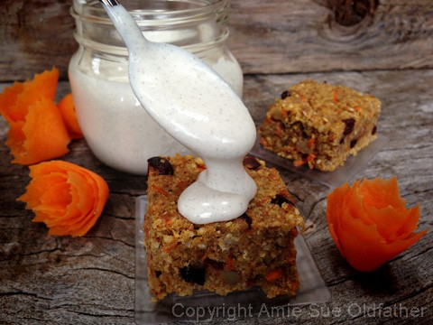
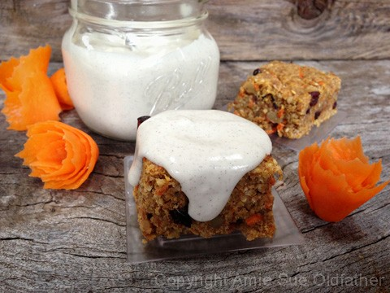
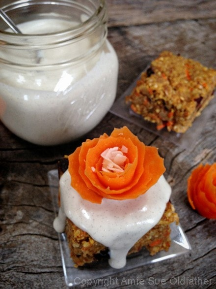
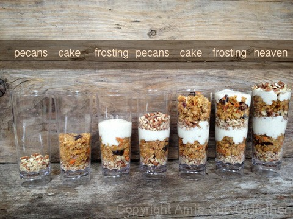
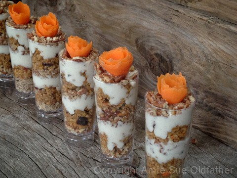
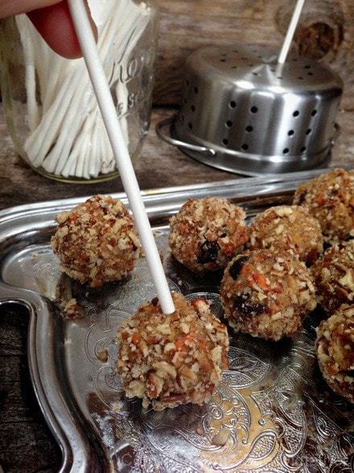
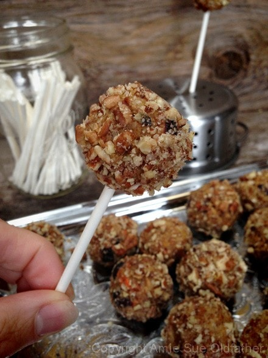
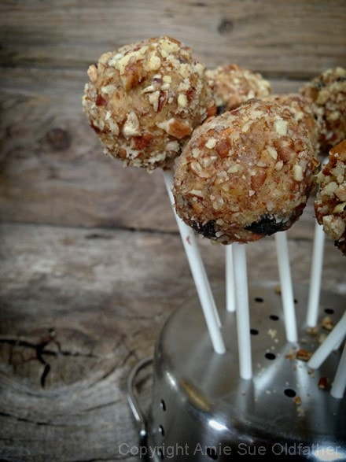

Buttery Walnut Carrot Cake Bars, Parfait, Cereal & Cake Pops

~ raw, vegan, gluten-free ~
This is a mildly sweet cake. I love sweet desserts just as much as anybody else but sometimes it is nice to have a sweet treat that doesn’t leave you begging for a tall glass of nut milk. Chock full of buttery walnuts, sweet and tart cranberries then cloaked in a luscious home-style vanilla bean icing…. perfect.
I have to say that I had a ton of fun with this recipe. I pulled the cake out of the fridge, sat it down before on the counter, and all of a sudden my mind was flooded with all sorts of ideas as to what I could do with it. Again, this one of the bonuses when creating raw foods. They are so versatile and can be used in so many different ways.
To start out, I made this recipe intending it to be a cake. I had these grand ideas of covering the outside with a nice thick frosting and decorating the top with carrot flowers. I didn’t end up doing that as my mind was quickly shifted by the fact that there are only two of us in this household. And I knew a whole cake couldn’t be eaten in time.
So without any thought, I started cutting it into single-serving pieces. Therefore, I don’t have any pictures of it as a typical cake, but I am sure that you can imagine how it looked.
I pulled the icing out of the fridge that I had made the night before and started to drizzle some on top. In those split seconds, I thought that this cake batter could be used for creating parfaits. “Good grief girl, slow down. We are not even finished making it look like a bar.” And yes, I do talk to myself. :)
After making some decorated bars, I dived right into making parfaits. I had seven tall glasses that were perfect. About three-quarters into making those, I thought… cake pops! I can also make cake pops. By now I had completely given up on focusing on the task at hand and allowed my brain to be ten steps in front of me. Sometimes, it just isn’t worth the battle of arguing with myself. Lol Parfaitscake/bread completed. And oooh so darn adorable!
I took some of the cake batter and started to crumble it into a bowl. Instantly, it reminded me of cereal. CAKE POPS Amie Sue CAKE POPS. OK, OK…. (sheesh) I know standard cake pops are made with baked cake mashed together with Betty Crocker frosting… I grabbed the jar of icing and poured what was left of it into the cake crumbles. With my fingers, I start to mash it all together. I pulled my hands out, and my fingers were twice their size, caked in the batter. “Put your finger in your mouth… do it…now…” Nope… “Dare ya?!” Can you hear the voices in my head? They were so loud. I refused the temptation and started rolling balls. They stuck together beautifully. Popped a stick in, rolled it in crushed pecans, and had dessert number three was sitting in front of me.
Back to the cereal. I couldn’t shake the image. I had about 6 bars left, unadorned, and feeling left out. I grabbed them and crumbled them onto the dehydrator sheet and popped it into the machine. About six hours later, I had an excellent cereal on hand! Now seriously, you have to appreciate that… four recipes from one! So, I will leave you to your own imagination and let you decide on what path you want to take. Enjoy!
Ingredients:
9 x 9″ pan (1 1/2″ thick)
Dry ingredients:
Wet ingredients:
- 1 cup pumpkin puree
- 1/2 cup water
- 1/2 cup raw honey or maple syrup
Add-ins:
Icing:
Preparation:
- In the food processor, fitted with the “S” blade, process the almonds and oats until they reach a small mealy consistency.
- Add flax, psyllium, pumpkin spice, cinnamon, and salt. Pulse till mixed and pour into a medium-sized bowl. Set aside.
- In the food processor combine the pumpkin puree, water, and honey. Process till combined.
- You can use a blender for this but why dirty another appliance.
- If you want to make this batter sweeter, in addition to the honey add 2 Tbsp maple syrup and taste test. The maple syrup will brighten the honey’s sweetness.
- To make this cake vegan, replace the honey with another liquid sweetener.
- Add the pumpkin sauce to the dry ingredients and mix this together by hand.
- Add the almond pulp, cranberries, walnuts, and shredded carrots. Mix with hands.
- Line the pan with plastic wrap or give it a thin coat of coconut oil.
- Place the batter in the pan and with a light hand, press the batter down evenly. Don’t press too hard. Let it sit for 15 minutes. Good time to do the dishes.
- By packing the batter in loosely, it will give you a lighter feeling cake, not so dense.
- Remove the batter from the pan and place it on the mesh sheet that comes with the dehydrator.
- Dry at 145 degrees (F) for 1 hour. This will create a crust on the outside.
- Reduce the temp to 115 degrees (F), dry for 3-4 hours, and flip the cake over and dry for another 4 hours. This is meant to be moist on the inside.
- My personal recommendation would be to store this cake/bread in an air-tight container, in the fridge, for 3-5 days. The more moisture that is left in your bread, the shorter the shelf life. Therefore, shelf life will vary with your drying technique. Whenever I make this recipe, it never lasts long enough to spoil. Keep in mind, the whole purpose of eating a raw diet is to eat foods at their peak of freshness, so don’t expect them to have a long expiration date.
- For more ideas, please read below.
Culinary Explanations:
- Why do I start the dehydrator at 145 degrees (F)? Click (here) to learn the reason behind this.
- When working with fresh ingredients, it is important to taste test as you build a recipe. Learn why (here).
- Don’t own a dehydrator? Learn how to use your oven (here). I do however truly believe that it is a worthwhile investment. Click (here) to learn what I use.
This is pretty photo-intensive… proceed at your own risk. :)
I am going to start with the bars. Cut into desired single-serving sizes.

Allow the icing to pool on top of the bar, letting it naturally cascade over the edges.

Leave as is or decorate with whole or crushed pecans or walnuts.

Or adorn her it with a carrot corsage. :) I sprinkled shredded coconut in the center for “pollen.”
The carrot flower compliments the fresh carrots used in this recipe.

Next… Buttery Walnut Carrot Cake Parfaits


Next creation…Buttery Walnut Carrot Cake Pops

Crumble the cake batter, mix in some icing and forms balls!


Cereal! Crumble the cake batter on a
dehydrator sheet and dry into cereal clusters. Serve with nut milk!
© AmieSue.com